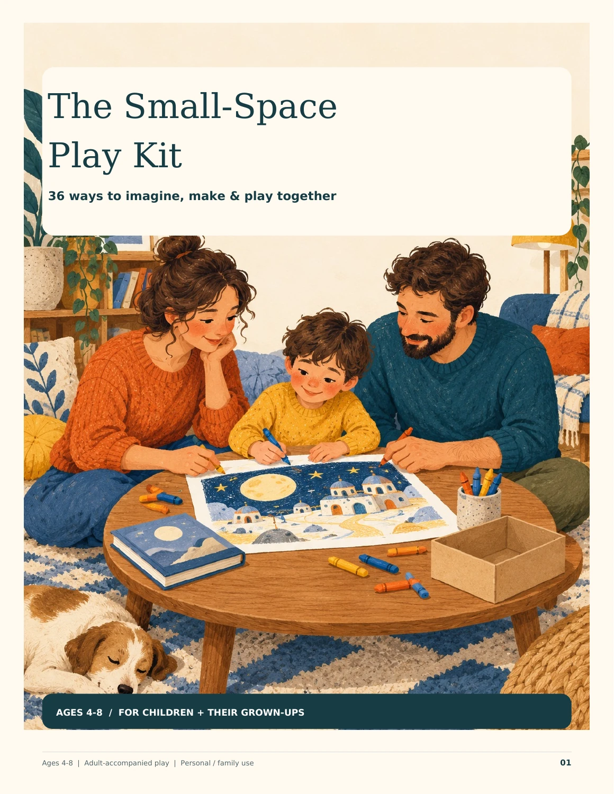
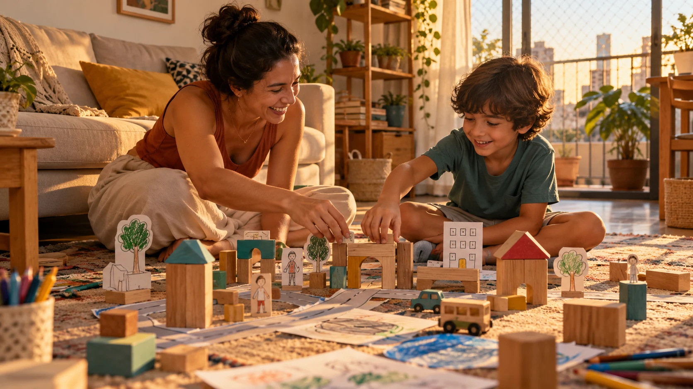

01
Choose what fits right now.
No supplies? Paper and crayons? A few safe household objects? Start with what you already have and the space available.
The hardest part isn’t turning off the tablet. It’s figuring out what comes next.
Have a simple next idea ready: a story, a drawing, a little world you can create together. For ages 4–8, with a grown-up.
Discover all 36 ways
THE COMPLETE DIGITAL GUIDE36 practical ways in one complete PDF
No physical book is shipped.
You ask for the tablet back. “Just a minute.” When it finally switches off, a new question appears: “What am I supposed to do now?”
On a tiring day, the screen becomes the easiest option.
The conversation waits. The crayons stay in the drawer.
Thinking of something else feels like one more job.
A limit can be easier to follow when there is a concrete next step.
That next invitation is where Little Room Adventures can help.
Between putting down the screen and starting something together,
there can be one simple idea.

Illustrative imageThe guide brings together 36 practical ways to talk, draw, tell stories and reinvent everyday objects. Choose what fits today, read the steps and begin together.
No supplies? Paper and crayons? A few safe household objects? Start with what you already have and the space available.
“Shall we invent a creature or run a pretend café?” A specific invitation gives “I’m bored” somewhere to go.
The adult reads the guide, then plays along. Your child can speak, point, draw or change the story. Reading skills aren’t required.
A flexible resource for shared play, not a treatment or a guaranteed reduction in screen time. Every child responds differently. Start small, adapt and repeat what your family enjoys.
36 practical ways for small spaces, organized in one complete digital guide with invitations, steps, examples, care notes and age-friendly adaptations.
Use voices, gestures and imagination to turn an ordinary moment into shared play.
Draw, invent and tell stories without needing a perfect result to copy.
Transform simple, safe objects and familiar spaces into invitations to imagine together.
One complete digital PDF. Everything organized in a single guide.
This is an example of the kind of invitation you’ll find in the guide. Try it and see whether the format fits your family.
“Where does our creature live, how does it travel, and what pretend food does it like?”
Gather: paper and age-appropriate crayons or pencils.
Ages 4–5: offer two choices at a time and welcome pointing or spoken answers.
Ages 6–8: ask how one body part helps the creature live in its home.
Another way: tell the creature’s story aloud instead of drawing.
Keep a practical repertoire close by, so creating a moment together takes less searching and less planning.
For families with children ages 4–8.
Digital product · Personal and family use · Optional printing
No subscription.
One complete digital PDF.
Access after payment approval. Instructions are sent to the email used at checkout. Confirm the final amount, currency and any applicable taxes before paying.
One complete digital PDF containing 36 practical ways and supporting guidance. No physical item and no recurring charge. Support and the applicable purchase and refund terms are available at checkout.
It gives you concrete alternatives for what comes after the screen switches off: what to offer, what to say and how to begin together. It does not promise to eliminate screen use, treat dependence or change your child’s behavior.
Families with children ages 4–8. The ideas are designed to be used with a grown-up, and children can speak, point, draw or participate with help.
No large play area is required. The guide focuses on practical ideas for small spaces using imagination and simple materials you may already have at home. An adult should always choose safe, age-appropriate materials.
You receive one complete digital PDF with 36 practical ways to encourage creativity, connection and more intentional time beyond passive screen use. The activities, explanations, examples and supporting guidance are all organized inside this single guide.
After payment approval, Kiwify sends access instructions to the email used at checkout. Check spam or promotions too. You can save the PDF and read it digitally; printing is optional.
This purchase is for personal and family use. A classroom license, resale and redistribution are not included.
You are paying for a practical, organized resource that keeps 36 ideas and their guidance together in one place, reducing the time spent searching whenever you need a next activity.
36 practical ways · One complete PDF · One-time purchase